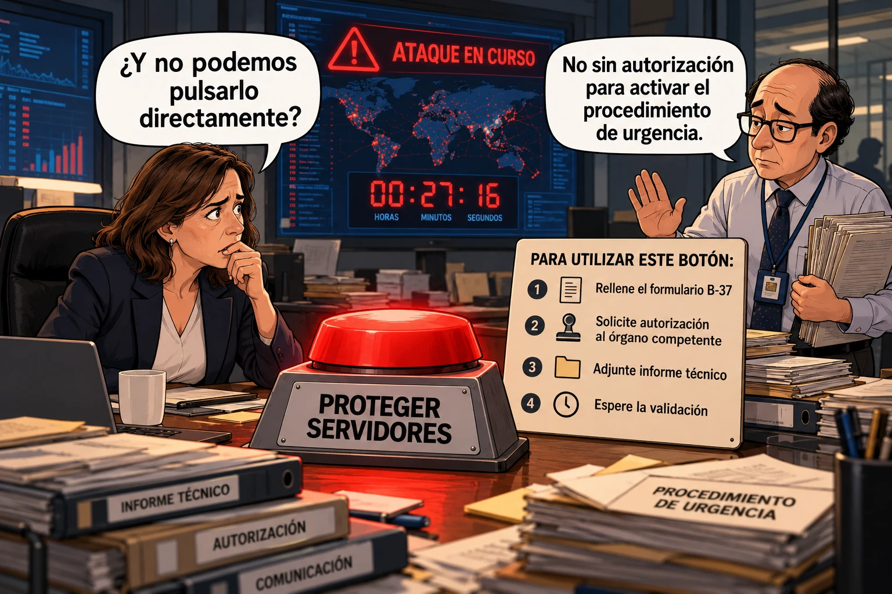

estrategIA #161 ·
La autorización para actuar de urgencia
El contexto
El número trataba de la necesidad de responder en horas a las amenazas de ciberseguridad. La viñeta imagina una oficina en la que proteger los servidores requiere completar varios trámites mientras el ataque está en curso. La sátira señala la importancia de preparar de antemano quién puede actuar y con qué autoridad; el formulario y la cuenta atrás forman parte de la escena ficticia.
Publicado en: estrategIA #161 — La inteligencia artificial cambia las reglas de la ciberseguridad y exige decisiones en horas
Leer el texto de la imagen
¿Y no podemos pulsarlo directamente? No sin autorización para activar el procedimiento de urgencia. ATAQUE EN CURSO 00:27:16 HORAS MINUTOS SEGUNDOS PROTEGER SERVIDORES PARA UTILIZAR ESTE BOTÓN: 1 Rellene el formulario B-37 2 Solicite autorización al órgano competente 3 Adjunte informe técnico 4 Espere la validación INFORME TÉCNICO AUTORIZACIÓN COMUNICACIÓN PROCEDIMIENTO DE URGENCIA